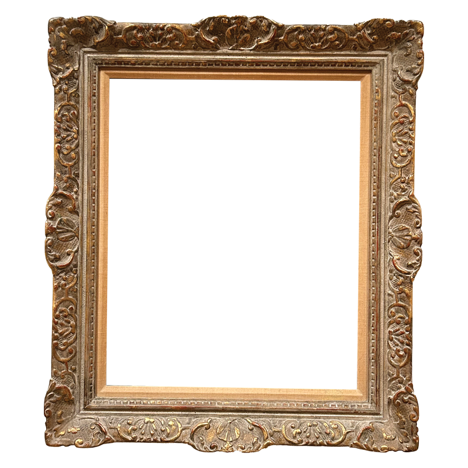
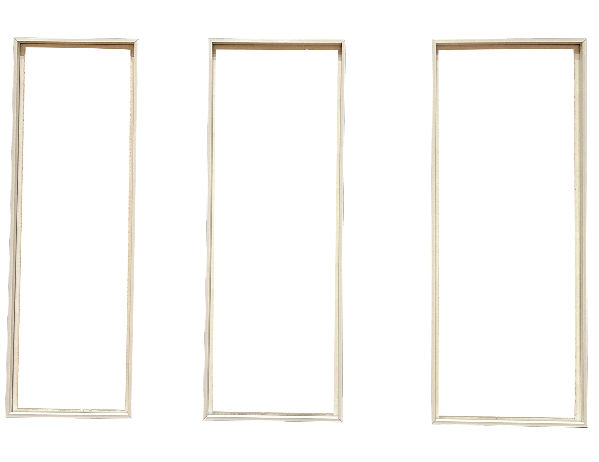

FRAMES FROM RISD MUSEUM
A collection of frames seen around the artworks found at RISD Museum, inspired by the Smithsonian article "Should the Frame Be Recognized as an Art Form?" by Eleanor Cummins. Drawing inspiration from Cummins' exploration of frames as not just protective enclosures but as integral elements of artistic expression. This archive extracts the artwork and by placing the frames on their own, observers can gain a fresh perspective, allowing them to appreciate different elements of the frame and see it in a new way.




Section 9